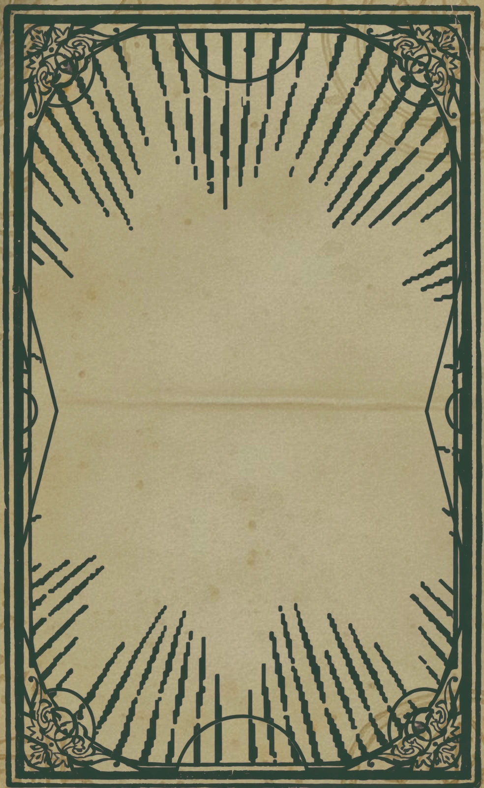
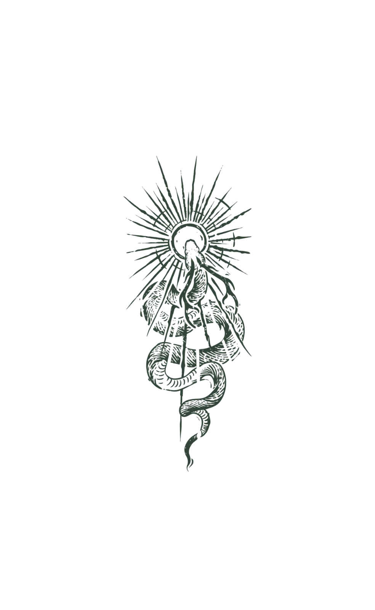
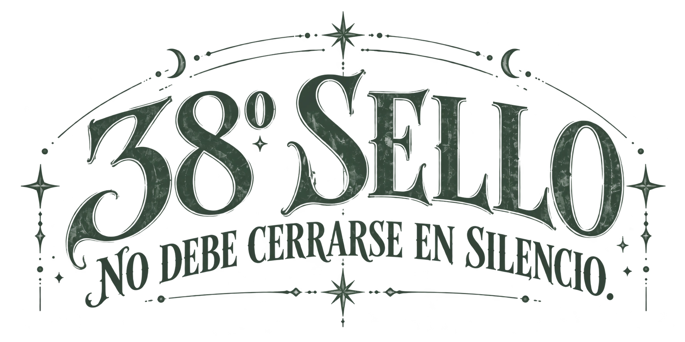
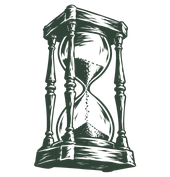
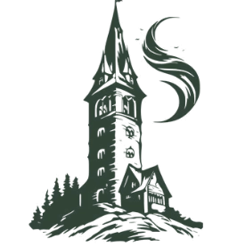
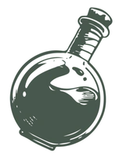
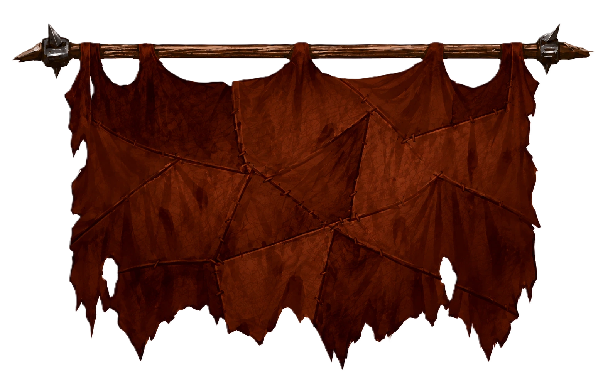

Gira la carta para revela mensaje


Gira la carta para revela mensaje


Cuentan los antiguos códices que cada año deja un sello de recuerdos y aprendizajes. Al llegar al Trigésimo Octavo, toca convocar al Cónclave: compartir mesa, festín y brebajes. Que nadie falte, pues cuantas más voces lo celebren, mejores serán los augurios para lo que está por escribirse.
¿Te unes al ritual?

a participar en el
RITUAL DEL
TRIGÉSIMO OCTAVO SELLO
CUMPLEAÑERO DE MAURICIO

SÁBADO · 10 DE OCTUBRE
Desde las 15:00 horas

VICTORIA 3098
Valparaíso
Brebajes, pócimas y elixires
serán bien recibidos.

Más ofrendas
Para dudas, consultas o extraños presagios,
Invocad al anfitrión por los medios habituales.
Acudid con hambre y sed.
El Cónclave os espera.